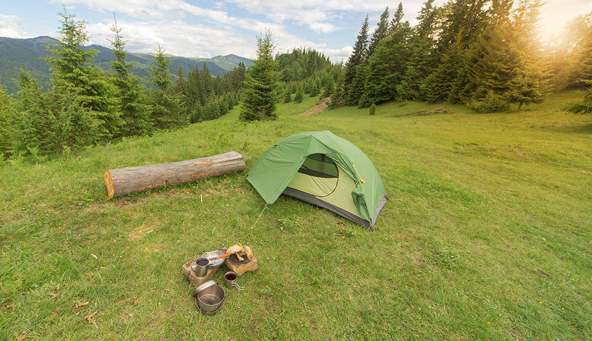

Camping in colorado: Ultimate Guide.
Camping at different locations in Colorado has been a fun adventure for many people over the years. Each location bringing its own pleasures and activities. There are many locations to camp in Colorado and in this ultimate guide, I will go over a couple of my favorites.
Best place for Staycations.
With affordable and family-friendly parks available, Colorado is well known for its many cabins or yurks and prime campsite which allows you to rest in comfort then go explore the diverse landscapes available.
Cottonwood Pass
Chatfield State Park
Location: 11500 N Roxborough Park Rd, Littleton, CO 80125
Colorado Campground
Location: Woodland Park, CO 80863
- Water
- Trash Collection
- Amphitheater
- Self Pay Station
- Host
- Vault Toilets

This is a high mountain pass in south-central Colorado that sits at an elevation of 12,119 feet/3,694 m. Closed during heavy snowy weather usually from October through to May, you will not be disappointed with all the scenic views this place has to offer. There are also many different trails available to hike.

This state park is located in the counties of Douglas and Jefferson which are located in Colorado. The lake here is over 1400 acres and is fed by the South Platte River. It is also fed by two other rivers which include plum creek. This is the perfect place for campers and bird-watchers alike as there are over 300 different bird species. There are also many other species of animals that frequent this area including cottontail rabbits, coyote, whitetail and mule deer, red fox, weasels, and prairie dogs.
There is also a nature education center known as Audubon Center at Chatfield State Park. This center offers workshops, classes, and lectures.

The Colorado campgrounds are open during the following seasons: June 01, 2020 – September 07, 2020, which is the peak season. This campground is located near the Manitou Lake Picnic Area. There is a short trail that leads up to the lovely lake, where you will enjoy fishing, canoeing and bird watching.
Double and single-family campsites are offered along with campfire rings and picnic tables.
Amenities Offered:
Attractions Nearby
Just 25 miles away is Colorado Springs that offers many different types of services.
Colorado Springs is about 25 miles southeast of the campground and offers many services. Garden of the Gods is a popular attraction just outside of town. This free park offers hiking trails, rock climbing routes, a visitor center and cafe. Pikes Peak lies west of Manitou Springs, which is about 20 miles from the campground. Visitors can hike, or drive to the summit of this beautiful mountain. The town of Woodland Park, located 6 miles south of Colorado Campground, offers gas, groceries, dining, and shopping.Camping with dogs in Colorado
- Keep your dog with you at all times.
- Bring enough food for your dog.
Campgrounds in Colorado allow us to keep our family pets with us when we visit. However, this does not mean you should allow your furry friend to roam free even if they are well trained.
Camping in Eagle Colorado
Riverside Rest for RVs
El Capitan Lodge
- Potable water
- Showers
- Picnic table
- Wi-fi
- Bins
Places Nearby: Sylvan Lake State Park, White River National Forest
This rest area is right beside a river and offers the most pleasurable sleeping experience with the sounds of moving water around you. There are 2 sites available and each site can have up to 7 guests. This is one of the cheapest sites in the area as it only cost $30 per night and allows the use of campfires. Some amenities offered include Potable water, Wifi, Bins, Picnic Table and a Kitchen.
Places Nearby: Sylvan Lake State Park, White River National Forest
This location has just 1 site and allows up to 10 guests at any given time. You can build a campfire to tell your ghost stories or just build one to enjoy smores while enjoying the vibrant environment. Sitting on 12 acres of wooded land, you will enjoy the many different views the El Capitan Lodge has to offer of the Rocky Mountains. Be prepared to live a clean-energy life away from home.
There are also many different types of activities to take part in such as biking, hiking, paddling, climbing, wildlife watching, and many more. Bring your family and let them enjoy the many different amenities or activities that the El Capitan Lodge have to offer.
Amenities:Conclusion
There are more than 13,000 campsites in Colorado for you to visit. These campsites comprise of both federal campsites and state lands. With all these cabins, campsites, and rv campgrounds, it is very easy to find yourself going back to basics at one of these spots. Whenever you go camping in Colorado, the location will not disappoint as it allows us to enjoy many different aspects of nature.